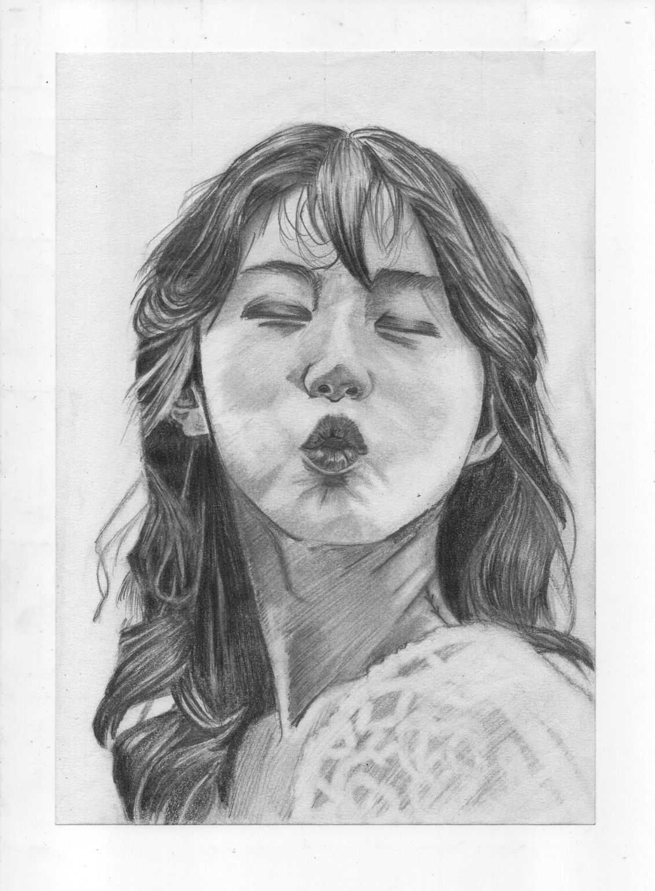
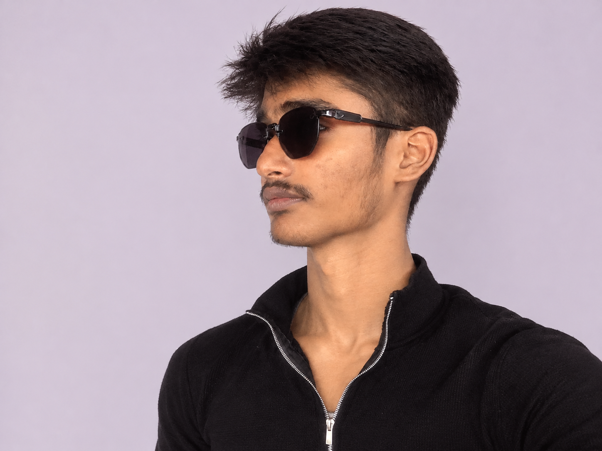

ARTIST · CREATOR · EXPLORER
Hey, I'm Ratnesh.
I make art, explore ideas, and enjoy learning how things work.
This is where I collect the things I create and share a little of the person behind them.
Explore my work
A few things I've made 01 / 09A SELECTION OF MY WORK
Selected works.
Different subjects, styles and experiments.
All made by hand.

THE PERSON BEHIND THE WORKA LITTLE ABOUT ME
Not just the art.
The person behind it.
I'm Ratnesh, an artist and creator who enjoys exploring different ways of expressing ideas.
Drawing is a big part of my life. I like making portraits, trying different mediums, and getting caught up in the small details that bring a piece together. A lot of the fun is in the process: practising, experimenting, and seeing an idea take shape.
Outside art, I'm curious about technology, design, chess, and plenty of other things. This website brings some of those interests together, with my artwork at the centre.
Thanks for taking a look around.
FIND ME ELSEWHERE
Let's stay connected.
For new work, sketches and occasional updates, you can find me here.